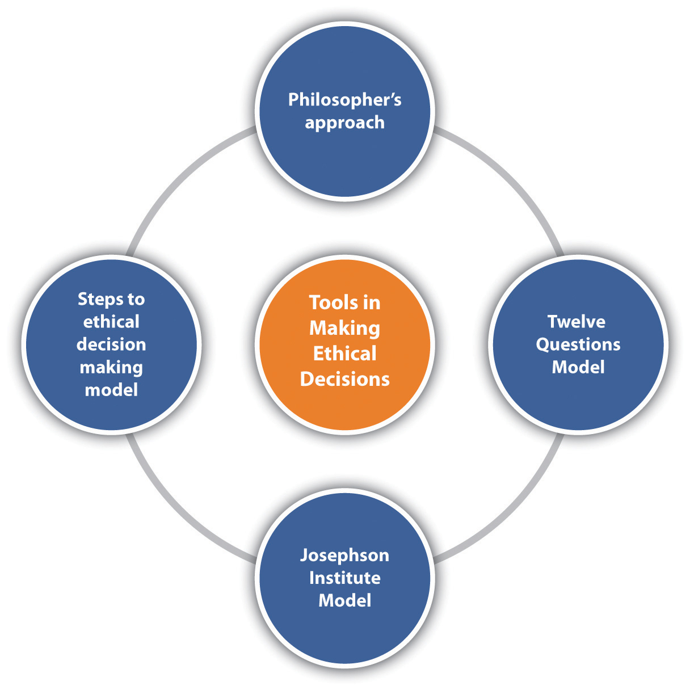
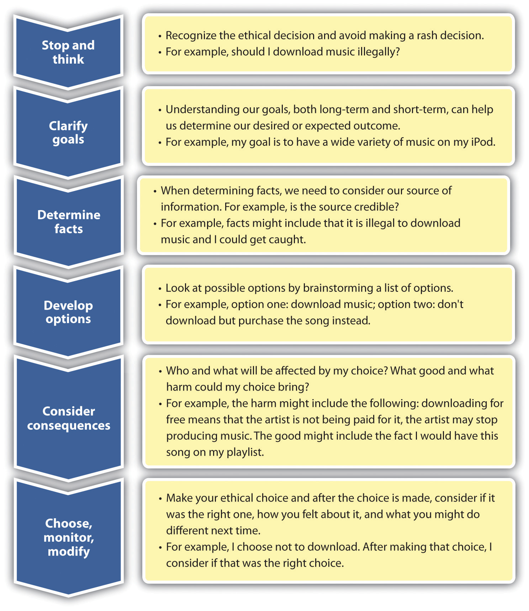

You can fool some of the people all of the time, and all of the people some of the time, but you cannot fool all of the people all the time.
Abraham Lincoln
Integrity is doing the right thing, even if nobody is watching.
Unknown author
Unethical or the “Way We Do Business”?
As the assistant manager at an automotive parts department, Jeremy has lots of experience with cars and the automotive parts business. Everyone has their own preference for car part brand, including him. When he works with customers, he might show them the other brand but tends to know more about his favorite brands and shows those brands more often. However, at the new product training seminar three weeks ago, all managers were told they will receive a bonus for every DevilsDeat brake pad they or their employees sell. Employees would also receive a bonus. Furthermore, it was recommended that managers train their employees only on the DevilsDeat products, so the managers and employees alike could earn a higher salary. Personally, Jeremy feels DevilsDeat brake pads are inferior and has had several products malfunction on him. But the company ordered this to be done, so Jeremy trained his employees on the products when he returned to the store.
Last week, a customer came in and said his seventeen-year-old daughter had been in an accident. The store had sold a defective DevilsDeat brake pad, and his daughter was almost killed. Jeremy apologized profusely and replaced the part for free. Three more times that week customers came in upset their DevilsDeat products had malfunctioned. Jeremy replaced them each time but began to feel really uncomfortable with the encouragement of selling an inferior product.
Jeremy called to discuss with the district manager, who told him it was just a fluke, so Jeremy continued on as usual. Several months later, a lawsuit was filed against DevilsDeat and Jeremy’s automotive parts chain because of three fatalities as a result of the brake pads.
This story is a classic one of conflicting values between a company and an employee. This chapter will discuss some of the challenges associated with conflicting values, social responsibility of companies, and how to manage this in the workplace.
Before we begin our conversation on ethics, it is important to note that making ethical decisions is an emotional intelligence skill, specifically self-management. We know that our emotional intelligence skills contribute to our career success, so learning how to make ethical decisions is imperative to development of this human relations skill.
First, though, what exactly is ethics? EthicsA set of values that define right and wrong. is defined as a set of values that define right and wrong. Can you see the challenge with this ambiguous definition? What exactly is right and wrong? That obviously depends on the person and the individual situation, which is what makes ethics difficult to more specifically define. ValuesPrinciples or standards that a person finds desirable. are defined as principles or standards that a person finds desirable. So we can say that ethics is a set of principles that a person or society finds desirable and help define right and wrong. Often people believe that the law defines this for us. To an extent it does, but there are many things that could be considered unethical that are not necessarily illegal. For example, take the popularized case where a reality production crew was filming about alcoholism—a show called Intervention. They followed one woman who got behind the wheel to drive and obviously was in no state to do so. The television crew let her drive. People felt this was extremely unethical, but it wasn’t illegal because they were viewed as witnesses and therefore had no legal duty to intervene.Weinstein, B. (2007, October 15). If it’s ethical, it’s legal, right? Businessweek, accessed February 24, 2012, http://www.businessweek.com/managing/content/oct2007/ca20071011_458606.htm This is the difference between something ethical and illegal. Something may not necessarily be illegal, but at the same time, it may not be the right thing to do.
While there may appear to be a difference in ethics between individuals and the organization, often individuals’ ethics are shown through the ethics of an organization, since individuals are the ones who set the ethics to begin with.Brown, M. (2010). Ethics in organizations. Santa Clara University, accessed June 2, 2012, http://www.scu.edu/ethics/publications/iie/v2n1/ In other words, while we can discuss organizational ethics, remember that individuals are the ones who determine organizational ethics, which ties the conversation of organizational ethics into personal ethics as well. If an organization can create an ethically oriented culture,Sims, R. R. (1991). Journal of Business Ethics, 10(7), 493–506 it is more likely to hire people who behave ethically. This behavior is part of human relations, in that having and maintaining good ethics is part of emotional intelligence. Of our four levels of ethics discussed next, the first two may not apply to us directly as individuals in the company. As possible leaders of an organization, however, presenting all four in this section is necessary for context.
There are four main levels of ethical levels within organizations.Rao Rama, V. S. (2009, April 17). Four levels of ethics. Citeman Network, accessed February 24, 2012, http://www.citeman.com/5358-four-levels-of-ethical-questions-in-business.html The first level is societal issues. These are the top-level issues relating to the world as a whole, which deal with questions such as the morality of child labor worldwide. Deeper-level societal issues might include the role (if any) of capitalism in poverty, for example. Most companies do not operate at this level of ethics, although some companies, such as Tom’s Shoes, feel it is their responsibility to ensure everyone has shoes to wear. As a result, their “one for one” program gives one pair of shoes to someone in need for every pair of shoes purchased. Concern for the environment, for example, would be another way a company can focus on societal-level issues. This level of ethics involves areas of emotional intelligence we have discussed, specifically, an individual’s empathy and social awareness. Many companies take a stand on societal ethics in part for marketing but also in part because of the ethics the organization creates due to the care and concern for individuals.
Our second level of ethics is stakeholder’s issues. A stakeholderAnyone affected by a company’s actions. is anyone affected by a company’s actions. In this level, businesses must deal with policies that affect their customers, employees, suppliers, and people within the community. For example, this level might deal with fairness in wages for employees or notification of the potential dangers of a company’s product. For example, McDonald’s was sued in 2010 because the lure of Happy Meal toys were said to encourage children to eat unhealthy food.Jacobson, M. (2010, June 22). McDonald’s lawsuit: Using toys to sell Happy Meals, accessed February 24, 2012, http://www.huffingtonpost.com/michael-f-jacobson/mcdonalds-lawsuit-manipul_b_621503.html This is a stakeholder issue for McDonald’s, since it affects customers. Although the case was dismissed in April 2012,The Associated Press. (2012, April 5). Calif. judge dismisses suit against McDonald’s toys. USA Today, accessed June 4, 2012, http://www.usatoday.com/money/industries/food/story/2012-04-05/mcdonalds-happy-meals-toys-lawsuit/54040390/1 the stakeholder issue revolves around the need for companies to balance healthy choices and its marketing campaigns.
The third level is the internal policy issue level of ethics. In this level, the concern is internal relationships between a company and employees. Fairness in management, pay, and employee participation would all be considered ethical internal policy issues. If we work in management at some point in our careers, this is certainly an area we will have extensive control over. Creation of policies that relate to the treatment of employees relates to human relations—and retention of those employees through fair treatment. It is in the organization’s best interests to create policies around internal policies that benefit the company, as well as the individuals working for them.
The last level of ethical issues is personal issues. These deal with how we treat others within our organization. For example, gossiping at work or taking credit for another’s work would be considered personal issues. As an employee of an organization, we may not have as much control over societal and stakeholder issues, but certainly we have control over the personal issues level of ethics. This includes “doing the right thing.” Doing the right thing affects our human relations in that if we are shown to be trustworthy when making ethical decisions, it is more likely we can be promoted, or at the very least, earn respect from our colleagues. Without this respect, our human relations with coworkers can be impacted negatively.
One of the biggest ethical challenges in the workplace is when our company’s ethics do not meet our own personal ethics. For example, suppose you believe strongly that child labor should not be used to produce clothing. You find out, however, that your company uses child labor in China to produce 10 percent of your products. In this case, your personal values do not meet the societal and stakeholder values you find important. This kind of difference in values can create challenges working in a particular organization. When choosing the company or business we work for, it is important to make sure there is a match between our personal values and the values within the organization.
Figure 5.1 The Four Levels of Ethics in Organizations

How important is it for you to work for an organization that has values and ethics similar to yours?
People are not born with a set of values. The values are developed during the aging process. We can gain our values by watching others, such as parents, teachers, mentors, and siblings. The more we identify with someone, say, our parents, the more likely we are to model that person’s behavior. For example, if Jenny sees her father frequently speed when driving on the highway, there is a good chance she will model that behavior as an adult. Or perhaps because of this experience, Jenny ends up doing the exact opposite and always drives the speed limit. Either way, this modeling experience affected her viewpoint. Likewise, if Jenny hears her mother frequently speak ill of people or hears her lying to get out of attending events, there is a good chance Jenny may end up doing the same as an adult—or the opposite. Besides our life models, other things that can influence our values are the following:
Our personality affects our values, too. For example, in Chapter 3 "Manage Your Stress", we discussed type A personalities and their concern for time. Because of this personality trait, the type A person may value using their time wisely.
While companies may have codes of ethics and policies in place, there is no doubt that behaving ethically—with or without these codes—is a key ingredient to successful human relationships with others. As we have discussed so far throughout the book, emotional intelligence is a key component to career success. Aspects of emotional intelligence, which relate to ethics, include self-management, social awareness, and empathy. Lacking social awareness and empathy when it comes to ethics can have disastrous effects. For example, after the 2010 BP oil spill in the Gulf, former CEO of BP Tony Hayward said, “I’d like my life back,”Durando, J. (2010, June 1). BP’s Tony Hayward: I’d like my life back, USA Today, accessed June 3, 2012, http://content.usatoday.com/communities/greenhouse/post/2010/06/bp-tony-hayward-apology/1 but later watched yacht races, showing a lack in social awareness (how our actions affect others) and empathy. As he said this, thousands of gallons of oil leaked into the Gulf, affecting thousands of people living in the area. Even though Hayward apologized later, the damage had been done, as he showed his lack of social awareness and empathy for the situation. This can be taken for a sign of lack of ethics. Learning how to make ethical decisions makes us more trustworthy, honest, and caring of how our decisions affect others. When we make ethical decisions and are viewed as ethical individuals, our career can begin to grow and so can our relationships with others.
Since we know that everyone’s upbringing is different and may have had different models, religion, attitudes, and experiences, companies create policies and standards to ensure employees and managers understand the expected ethics. These sources of ethics can be based on the levels of ethics, which we discussed earlier. Understanding our own ethics and company ethics can apply to our emotional intelligence skills in the form of self-management and managing our relationships with others. Being ethical allows us to have a better relationship with our supervisors and organizations.
For example, companies create values statementsThe guiding principles of the organization, those things that the organization finds important., which explain their values and are tied to company ethics. A values statement is the organization’s guiding principles, those things that the company finds important. The following are examples:
Have you found yourself having to make any of these ethical choices within the last few weeks?
A company publicizes its values statements but often an internal code of conductA guideline for dealing with ethics in an organization. is put into place in order to ensure employees follow company values set forth and advertised to the public. The code of conduct is a guideline for dealing with ethics in the organization. The code of conduct can outline many things, and often companies offer training in one or more of these areas:
Some companies have 1-800 numbers, run by outside vendors, that allow employees to anonymously inform about ethics violations within the company. Someone who informs law enforcement of ethical or illegal violations is called a whistleblowerSomeone who informs law enforcement of ethical or illegal violations.. For example, Dr. Mitchell Magid worked as an oral surgeon for Sanford Health in North Dakota. When he reported numerous safety violations, he claimed he was fired from his job. In an initial ruling, Dr. Magid was awarded $900,000 for the firing, although Sanford Health claims he was fired for other reasons and will appeal the case.Outpatient Surgery. (n.d.). Whistle blowing surgeon awarded $900,000, accessed February 24, 2012, http://www.outpatientsurgery.net/news/2012/02/32-Whistleblowing-Surgeon-Awarded-900-000 In the United States, several laws protect whistleblowers. For example, the Occupational Health and Safety Act (OSHA) protects whistleblowers when they report safety violations. The Sarbanes-Oxley Act of 2002 has a whistleblower statute, which protects employees who whistleblows on wrongful financial dealings within an organization.Sarbanes Oxley Act, 2002, section 806.
Figure 5.2

Verizon, for example, has a forty-page code of conduct that outlines ethical expectations. This is an excerpt from that code of conduct.Verizon Code of Conduct, accessed February 24, 2012, https://www22.verizon.com/about/careers/pdfs/CodeOfConduct.pdf
Like a person, a company can have ethics and values that should be the cornerstone of any successful person. Understanding where our ethics come from is a good introduction into how we can make good personal and company ethical decisions. Ethical decision making ties into human relations through emotional intelligence skills, specifically, self-management and relationship management. The ability to manage our ethical decision-making processes can help us make better decisions, and better decisions result in higher productivity and improved human relations. We will discuss ethical decision making and self-management in Section 5.2 "Making Ethical Decisions".
Now that we have working knowledge of ethics, it is important to discuss some of the models we can use to make ethical decisions. Understanding these models can assist us in developing our self-management skills and relationship management skills. These models will give you the tools to make good decisions, which will likely result in better human relations within your organization.
Note there are literally hundreds of models, but most are similar to the ones we will discuss. Most people use a combination of several models, which might be the best way to be thorough with ethical decision making. In addition, often we find ethical decisions to be quick. For example, if I am given too much change at the grocery store, I may have only a few seconds to correct the situation. In this case, our values and morals come into play to help us make this decision, since the decision making needs to happen fast.
Howard Gardner with University of Massachusetts Law School discusses ethics and youth.
Laura Nash, an ethics researcher, created the Twelve Questions Model as a simple approach to ethical decision making.Nash, L. (1981). Ethics without the sermon. Howard Business Review, 59 79–90, accessed February 24, 2012, http://www.cs.bgsu.edu/maner/heuristics/1981Nash.htm In her model, she suggests asking yourself questions to determine if you are making the right ethical decision. This model asks people to reframe their perspective on ethical decision making, which can be helpful in looking at ethical choices from all angles. Her model consists of the following questions:Nash, L. (1981). Ethics without the sermon. Howard Business Review, 59 79–90, accessed February 24, 2012, http://www.cs.bgsu.edu/maner/heuristics/1981Nash.htm
Consider the situation of Catha and her decision to take home a printer cartilage from work, despite the company policy against taking any office supplies home. She might go through the following process, using the Twelve Questions Model:
As you can see from the process, Catha came to her own conclusion by answering the questions involved in this model. The purpose of the model is to think through the situation from all sides to make sure the right decision is being made.
As you can see in this model, first an analysis of the problem itself is important. Determining your true intention when making this decision is an important factor in making ethical decisions. In other words, what do you hope to accomplish and who can it hurt or harm? The ability to talk with affected parties upfront is telling. If you were unwilling to talk with the affected parties, there is a chance (because you want it kept secret) that it could be the wrong ethical decision. Also, looking at your actions from other people’s perspectives is a core of this model.
Figure 5.3
Some of the possible approaches to ethical decision making. No one model is perfect, so understanding all of the possibilities and combining them is the best way to look at ethical decision making.
Josephson Institute of Ethics uses a model that focuses on six steps to ethical decision making. The steps consist of stop and think, clarify goals, determine facts, develop options, consider consequences, choose, and monitor/modify.
As mentioned, the first step is to stop and think. When we stop to think, this avoids rash decisions and allows us to focus on the right decision-making process. It also allows us to determine if the situation we are facing is legal or ethical. When we clarify our goals, we allow ourselves to focus on expected and desired outcomes. Next, we need to determine the facts in the situation. Where are we getting our facts? Is the person who is providing the facts to us credible? Is there bias in the facts or assumptions that may not be correct? Next, create a list of options. This can be a brainstormed list with all possible solutions. In the next step, we can look at the possible consequences of our actions. For example, who will be helped and who might be hurt? Since all ethical decisions we make may not always be perfect, considering how you feel and the outcome of your decisions will help you to make better ethical decisions in the future. Figure 5.4 "An Example of Josephson’s Model when Dealing with the Ethical Situation of Downloading Music from Share Websites." gives an example of the ethical decision-making process using Josephson’s model.
Figure 5.4 An Example of Josephson’s Model when Dealing with the Ethical Situation of Downloading Music from Share Websites.
There are many models that provide several steps to the decision-making process. One such model was created in the late 1990s for the counseling profession but can apply to nearly every profession from health care to business.Corey, G., Corey, M . S., & Callanan, P. (1998). Issues and ethics in the helping professions. Toronto: Brooks/Cole Publishing Company; Syracuse School of Education. (n.d.). An ethical decision making model, accessed February 24, 2012, http://soe.syr.edu/academic/counseling_and_human_services/modules/Common_Ethical_Issues/ethical_decision_making_model.aspx In this model, the authors propose eight steps to the decision-making process. As you will note, the process is similar to Josephson’s model, with a few variations:
Most organizations provide such a framework for decision making. By providing this type of framework, an employee can logically determine the best course of action. The Department of Defense uses a similar framework when making decisions, as shown in Note 5.14 "Department of Defense Decision-Making Framework".
The Department of Defense uses a specific framework to make ethical decisions.United States Department of Defense. (1999). Joint Ethics Regulation DoD 5500.7-R., accessed February 24, 2012, http://csweb.cs.bgsu.edu/maner/heuristics/1999USDepartmentOfDefense.htm and http://ogc.hqda.pentagon.mil/EandF/Documentation/ethics_material.aspx
Define the problem.
Identify the goals.
Name all the stakeholders.
Gather additional information.
State all feasible solutions.
Eliminate unethical options.
Philosophers and ethicists believe in a few ethical standards, which can guide ethical decision making. First, the utilitarian approachA source of ethical standards that says, when choosing one ethical action over another, we should select the one that does the most good and least harm. says that when choosing one ethical action over another, we should select the one that does the most good and least harm. For example, if the cashier at the grocery store gives me too much change, I may ask myself, if I keep the change, what harm is caused? If I keep it, is any good created? Perhaps the good created is that I am not able to pay back my friend whom I owe money to, but the harm would be that the cashier could lose his job. In other words, the utilitarian approach recognizes that some good and some harm can come out of every situation and looks at balancing the two.
In the rights approachA source of ethical standards that says we look at how our actions will affect the rights of those around us., we look at how our actions will affect the rights of those around us. So rather than looking at good versus harm as in the utilitarian approach, we are looking at individuals and their rights to make our decision. For example, if I am given too much change at the grocery store, I might consider the rights of the corporation, the rights of the cashier to be paid for something I purchased, and the right of me personally to keep the change because it was their mistake.
The common good approachA source of ethical standards that says, when making ethical decisions, we should try to benefit the community as a whole. says that when making ethical decisions, we should try to benefit the community as a whole. For example, if we accepted the extra change in our last example but donated to a local park cleanup, this might be considered OK because we are focused on the good of the community, as opposed to the rights of just one or two people.
The virtue approachA source of ethical standards that looks at desirable qualities and says we should act to obtain our highest potential. asks the question, “What kind of person will I be if I choose this action?” In other words, the virtue approach to ethics looks at desirable qualities and says we should act to obtain our highest potential. In our grocery store example, if given too much change, someone might think, “If I take this extra change, this might make me a dishonest person—which I don’t want to be.”
The imperfections in these approaches are threefold:Santa Clara University. (n.d.). A framework for thinking ethically, accessed February 24, 2012, http://www.scu.edu/ethics/practicing/decision/framework.html
Because of these imperfections, it is recommended to combine several approaches discussed in this section when making ethical decisions. If we consider all approaches and ways to make ethical decisions, it is more likely we will make better ethical decisions. By making better ethical decisions, we improve our ability to self-manage, which at work can improve our relationships with others.
No chapter on ethics would be complete without a discussion on social responsibility. People, not only companies, can engage in social responsibility. Being socially responsible shows both social awareness and self-management skills—that is, an awareness of how our decisions affect others. This section will first discuss social responsibility on the corporate level and then social responsibility on the individual level. As we discussed with ethical company standards, it is difficult to separate corporate ethics and corporate social responsibility from individual ethics and social responsibility, since people are the ones making the corporate policies. For purposes of this section, we will first discuss social responsibility on the corporate level and then on the individual level.
Since social responsibility was first mentioned in the 1960s, companies have felt pressure from society to behave in a more socially responsible manner. Social responsibilityThe duty of business to do no harm to society. is the duty of business to do no harm to society. In other words, in their daily operations, businesses should be concerned about the welfare of society and mindful of how its actions could affect society as a whole. We know that social responsibility doesn’t always happen, despite the seemingly best efforts of a company. For example, court papers accuse British Petroleum (BP) of gross negligence for safety violations and knowingly failing to maintain the oil rig, which caused the death of eleven workers and leaked oil in the Gulf of Mexico for eighty-seven days.United Press International. (2012, February 24). BP trial will push gross negligence claim, accessed February 24, 2012, http://www.upi.com/Business_News/2012/02/24/BP-trial-will-push-gross-negligence-claim/UPI-22771330126860/ In this case, and others like it, people question the ability of companies to fulfill their duty to society. Ideally, companies should look at four main areas of social responsibility and act ethically in all four areas. In fact, even as individuals we should be aware of these areas of social responsibility, which we will discuss in this section. Those four areas are the following:Carroll, A. (n.d.). The pyramid of corporate social responsibility. Business Horizons, accessed February 24, 2012, http://cf.linnbenton.edu/bcs/bm/gusdorm/upload/Pyramid%20of%20Social%20Responsibility.pdf
Based on these areas, many believe business should go above and beyond the law to act ethically, meet expectations of society, and even go beyond by donating profit back to the communities in which the businesses operate. As we mentioned at the start of this section, businesses are not the only ones who engage in social responsibility. Since people run businesses, often we see business social responsibility initiatives that are directly related to individuals in the organization. For example, the Body Shop founder, Anita Roddick,Lyall, S. (2007, September 12). Anita Roddick, founder of the Body Shop, dies at 64. New York Times, accessed June 2, 2012, http://www.nytimes.com/2007/09/11/style/11iht-obits.4.7467721.html cared deeply for the environment and for animals, and as a result, her organization (now owned by L’Oreal) focused on environmentally friendly products and products that did not test on animals. This is an example of how social responsibility in organizations can be a direct result of the individual’s care and concern.
Figure 5.5 The Four Areas of Social Responsibility

Companies should strive to meet all areas of social responsibility.
Erik Joule, senior vice president of merchandising and design for Levi Strauss, discusses social responsibility issues.
More recently, social responsibility has been looked at as going above and beyond even philanthropy. Past ideas on social responsibility implied that businesses must trade off social responsibility for profits—in other words, in order to make profit, businesses had to actually harm society. This way of thinking has changed with the idea of creating shared value. This concept, created by Michael E. Porter and Mark R. Kramer of Harvard University, attempts to dispel this myth by presenting a new view on social responsibility.Porter, M. E., & Kramer, M. R. (2011, January). Creating shared value. Harvard Business Review, accessed February 24, 2012, http://hbr.org/2011/01/the-big-idea-creating-shared-value Creating shared value (CSV)Creating shared value is the premise that companies and the community are tied closely together, and if one benefits, they both benefit. is the premise that companies and the community are tied closely together, and if one benefits, they both benefit. For example, if companies donate money to schools, it actually benefits both the community and the company in that a better educated workforce can be profitable for the company in the long run. The idea that social responsibility is something that costs companies money is no longer in favor. In fact, behaving socially responsibly can help a company save money. Small things, such as turning off computers at night, result in cost savings in electricity and are the right thing to do from a social responsibility perspective, too. As Porter and Kramer have pointed out through their research, benefiting the community does not have to be at the cost of the company or of society; both can work in tandem.
As we have already discussed, even though we say companies are socially responsible (or not), individuals in the organization are the ones who create policies surrounding social responsibility efforts. As individuals, our emotional intelligence skills, such as social awareness and empathy, can be shown through our use of social responsibility efforts within an organization but also through our personal social responsibility efforts. ISR (individual social responsibility)An individual’s awareness of how personal actions have an effect on the community. is defined as an individual being aware of how personal actions have an effect on the community. ISR can include the following:
Figure 5.6 Some Examples of Individual Social Responsibility

Engaging in ISR activities such as these can help us develop our emotional intelligence skills through the use of social awareness—that is, understanding how our actions can affect others and engaging in empathy for others. In addition, we can build our self-esteem and self-perception by helping othersBénabou, R. & Tirole, J (2010). Individual and corporate social responsibility. Economica, 77, 1–19. and engaging in socially responsible activities. As we have discussed throughout the chapter, to improve human relations skills, we must understand that ethics, social responsibility, and emotional intelligence skills are intertwined with each other. Those who continually develop their emotional intelligence skills will likely engage in ethical and socially responsible behavior, both personally and as leaders of their organizations.
Damon has just been promoted to the program manager in his digital marketing agency. As program manager, he is responsible for working with vendors to provide services to his clients. One part of his job is to screen out potential vendors for clients and then make overall recommendations and provide project plans to the client based on his selected vendors. This relationship is important because the client places an immense amount of trust in the vendor choices made. Damon, with his straightforward communication style, is talented in picking and choosing the best vendors for the client, which was one reason he was hired. The nature of the job requires Damon to often meet with potential vendors and salespeople. One late afternoon, a vendor meeting with Valerie runs into dinnertime. Valerie asks Damon if he wants to have a drink and some appetizers while they continue discussing the services the vendor has to offer. They go next door to a pub and continue their discussion. When the check comes, Damon picks it up and the Valerie says, “No, you can’t pay for this. I got it.” Damon hands her the check and thanks her for dinner.
Later that week, after Damon has met with all possible vendors for the project, he decides to go with Valerie’s company. They provide the highest-quality services at the best price. In fact, their pricing is about 10 percent less while the services they will provide get rave reviews from other clients. Damon is confident it is the right choice. When Damon goes to the project manager with this decision, the project manager, Janet, says she prefers not to work with that vendor, then asks, “Didn’t Valerie take you to dinner the other night?”
Damon replies, “Yes, but that isn’t why I choose them to be our vendor for this project.” Janet doesn’t respond and turns back to her computer and asks Damon to explain why Valerie’s company is better.